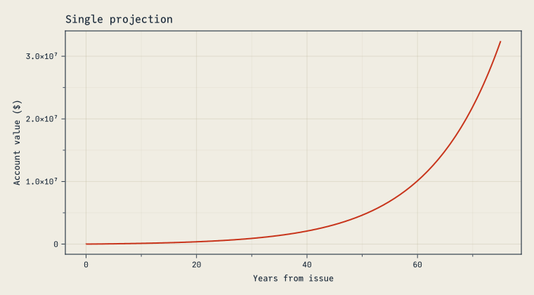
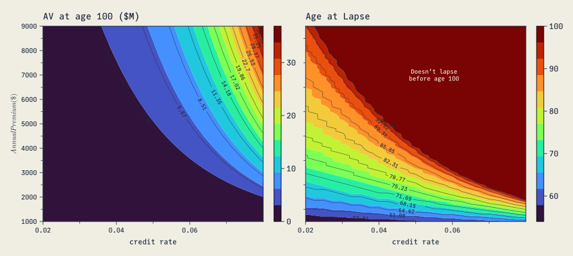

using Dates
using MortalityTables
using DifferentialEquations
using CairoMakie
using ActuaryUtilities
using LaTeXStrings
# Apply the site's custom Makie plot theme (cassette futurism).
include(joinpath(@__DIR__, "..", "..", "assets", "themes", "cassette_futurism.jl"))
set_theme!(cassette_futurism_theme())Introduction
This demonstrates an example of defining an universal life policy value roll like a discrete differential equation.
It then uses the SciML DifferentialEquations package to “solve” the policy projection given a single point, but also to see how the policy projection behaves under different premium and interest rate conditions.
The first time this is run, it will download and precompile some large packages.
Let’s use the 2001 CSO table as the basis for cost of insurance charges:
cso = MortalityTables.table("2001 CSO Super Preferred Select and Ultimate - Male Nonsmoker, ANB")MortalityTable (CSO/CET):
Name:
2001 CSO Super Preferred Select and Ultimate - Male Nonsmoker, ANB
Fields:
(:select, :ultimate, :metadata)
Provider:
American Academy of Actuaries
mort.SOA.org ID:
1076
mort.SOA.org link:
https://mort.soa.org/ViewTable.aspx?&TableIdentity=1076
Description:
2001 Commissioners Standard Ordinary (CSO) Super Preferred Select and Ultimate Table – Male Nonsmoker. Basis: Age Nearest Birthday. Minimum Select Age: 0. Maximum Select Age: 99. Minimum Ultimate Age: 16. Maximum Ultimate Age: 120Next, policy mechanics are coded. It’s essentially a discrete differential equation, so it leverages DifferentialEquations.jl
The projection is coded in the Discrete DifferentialEquation format:
\[u_{n+1} = f(u,p,t_{n+1})\]
In the code below, this translates to:
uis the state of the system. We will track three variables to represent thestate:state[1]is the account valuestate[2]is the premium paid at that timestepstate[3]is the policy duration
pare the parameters of the system.tis the time, which will represent days since policy issuance
function policy_projection(state, p, t)
# grab the state from the inputs
av = state[1]
# calculated variables
cur_date = p.issue_date + Day(t)
dur = policy_duration(p.issue_date, cur_date)
att_age = p.issue_age + dur - 1
# lapse if AV <= 0
lapsed = (av <= 0.0) & (t > 1)
if !lapsed
monthly_coi_rate = (1 - (1 - p.mort_assump[att_age])^(1 / 12))
## Periodic Policy elements
# annual events
if Dates.monthday(cur_date) == Dates.monthday(p.issue_date) ||
cur_date == p.issue_date + Day(1) # OR first issue date
premium = p.annual_prem
else
premium = 0.0
end
# monthly_events
if Dates.day(cur_date) == Dates.day(p.issue_date)
coi = max((p.face - av) * monthly_coi_rate, 0.0)
else
coi = 0.0
end
# daily events
int(av) = av * ((1 + p.int_rate)^(1 / 365) - 1.0)
# av
new_av = max(0.0, av - coi + premium + int(av - coi))
# new state
return [new_av, premium, dur] # AV, Prem, Dur
else
# new state
return [0.0, 0.0, dur] # AV, Prem, Dur
end
endpolicy_projection (generic function with 1 method)The following function will create a named tuple of parameters given a varying prem (premium) and int (credit rate).
params(prem, int) = (
int_rate=int,
issue_date=Date(2010, 1, 1),
face=1e6,
issue_age=25,
mort_assump=MortalityTables.table("2001 CSO Super Preferred Select and Ultimate - Male Nonsmoker, ANB").ultimate,
projection_years=75,
annual_prem=prem,
)params (generic function with 1 method)Runing the system
This results in the following plot of the tracked account value (state[1]):
begin
pp = params(
8000.0, # 8,000 annual premium
0.08 # 8% interest
)
# calculate the number of days to project
projection_end_date = pp.issue_date + Year(pp.projection_years)
days_to_project = Dates.value(projection_end_date - pp.issue_date)
# the [0.0,..] are the initial conditions for the tracked variables
prob = DiscreteProblem(policy_projection, [0.0, 0.0, 0], (0, days_to_project), pp)
proj = solve(prob, FunctionMap())
let
years = proj.t ./ 365
fig = Figure(size=(760, 420))
ax = Axis(fig[1,1]; xlabel="Years from issue", ylabel="Account value (\$)",
title="Single projection")
lines!(ax, years, [u[1] for u in proj.u];
color=CASSETTE_PALETTE[1], linewidth=2)
fig
end
end
Moving up the ladder of abstraction
An excellent way to understand the behavior of a model is to move up the ladder of abstraction. Below, we will see what happens to the projection at varying levels of credit rates and annual premiums.
The full range of simulated outcomes can take a couple of minutes to run:
begin
prem_range = 1000.0:100.0:9000.0
int_range = 0.02:0.0025:0.08
function ending_av(ann_prem, int, days_to_project)
p = params(ann_prem, int)
prob = DiscreteProblem(policy_projection, [0.0, 0.0, 0], (0, days_to_project), p)
proj = solve(prob, FunctionMap())
end_av = proj[end][1]
if end_av == 0.0
# +1 because the search starts at the 2nd column of `proj`
lapse_time = findfirst(isequal(0.0), proj[1, 2:end]) + 1
else
lapse_time = length(proj)
end
duration = proj[3, lapse_time]
end_age = p.issue_age + duration - 1.0
return end_av, end_age
end
end_age = zeros(length(prem_range), length(int_range))
end_av = zeros(length(prem_range), length(int_range))
# loop through each projection we did and fill our ranges with the ending AV and ending age
for (i, vp) in enumerate(prem_range)
for (j, vi) in enumerate(int_range)
end_av[i, j], end_age[i, j] = ending_av(vp, vi, days_to_project)
end
end
endNow let’s plot the result. Not surprising, interest has a huge effect on the policy projection. Premium is also a major influence.
One thing that’s remarkable is how going from 2000 premium to just ~2200 of premium results in about a $5m difference at 8% interest. The power of compound interest!
let
fig = Figure(size=(960, 430))
ax1 = Axis(fig[1,1]; xlabel="credit rate", ylabel=L"Annual Premium (\$)",
title="AV at age 100 (\$M)")
z1 = (end_av ./ 1e6)'
cf1 = contourf!(ax1, int_range, prem_range, z1; colormap=:turbo, levels=12)
contour!(ax1, int_range, prem_range, z1;
color=CF_INK, linewidth=0.5, levels=12, labels=true, labelsize=9,
labelcolor=CF_INK)
Colorbar(fig[1, 2], cf1)
ax2 = Axis(fig[1,3]; xlabel="credit rate", title="Age at Lapse",
yticksvisible=false, yticklabelsvisible=false)
z2 = end_age'
cf2 = contourf!(ax2, int_range, prem_range, z2; colormap=:turbo, levels=12)
contour!(ax2, int_range, prem_range, z2;
color=CF_INK, linewidth=0.5, levels=12, labels=true, labelsize=9,
labelcolor=CF_INK)
Colorbar(fig[1, 4], cf2)
text!(ax2, 0.055, 7000; text="Doesn't lapse\nbefore age 100",
align=(:center, :center), color=CF_PAPER, fontsize=10)
fig
end
Conclusion
This shows how universal life mechanics are a dynamic system. the growth/decay is governed by two competing feedback loops:
Growth: the force of interest lets the balance grow exponentially over long periods of time
Decay: low balances increase the net amount at risk and the resulting COI charges.
Endnotes
This is not meant to represent any particular insurance product, nor fully replicate typical account mechanics.